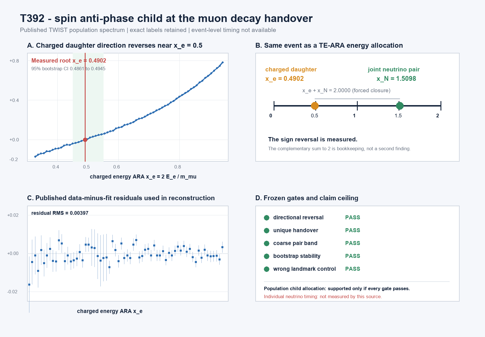

T392 - spin anti-phase child at the muon decay handover
Registered verdict: SUPPORTED - POPULATION HANDOVER CHILD
The published TWIST positron spin asymmetry reverses at x_e = 0.490189 (95% bootstrap CI 0.486116 to 0.494456). The complementary joint-neutral energy coordinate is x_N = 1.509811.

Exact identity read
| Object | ARA role | Measured or derived? |
|---|---|---|
| Parent muon spin anti-phase | population parent | measured separately in T391 |
| Positron asymmetry A(p) | visible downstream child | published TWIST fit plus measured residual |
| Joint two-neutrino packet | neutral downstream sibling | combined complement only |
| x_e + x_N = 2 | TE-ARA closure | forced by energy bookkeeping |
Frozen gates
| Gate | Result | Exact read |
|---|---|---|
| directional reversal | PASS | low median -0.128470; high median +0.483328 |
| unique handover | PASS | one local root at x_e=0.490189 |
| coarse pair band | PASS | x_e=0.490189; x_N=1.509811 |
| bootstrap stability | PASS | 100.000% of roots inside [0.45,0.55] |
| wrong landmark control | PASS | distance to 0.5=0.009811; to 0.25=0.240189; to 0.75=0.259811 |
Claim boundary. This is a population energy-allocation handover beneath the spin anti-phase. It does not predict the instant an individual muon decays and does not resolve the two neutrino siblings separately.
Source and reproduction
TWIST Collaboration, Figure 6 in Measurement of P_mu xi in Polarized Muon Decay, Phys. Rev. D 74, 072007 (2006). Official source: TRIUMF PDF.
Protocol SHA-256: C40A2C920A97C47D1C66D4A26B335D01CEBEF6B2AF8EF6180203CE4489D23B19
Source PDF SHA-256: 7BD41FBDAFB525BC4DCC53F3CFF68A1BBF59A0B2280216EDF7A2F80851B5E4D1